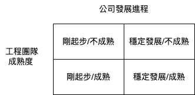

從 fw 工程師轉職到後端也6年了。一開始，只是因為本來的工作遇到瓶頸，又嚮往矽谷純軟公司的文化才跳出原本的圈子。
這二年在 alpha camp 擔任助教，前後也指導過 4, 50位學生。
每枇學生畢業前都會有一個 office hour，需要回答他們的問題及給出建議。
這篇文章想整理多數轉職者的問題及自己的經驗。
常見問題
作品集
這題是後端學生常有的問題，假如是前端，網路上有一堆 xx 網站的復刻練習或是各種模版/元件的project可以參考。
至於後端，我給的建議通常是二個方向:
- 從自己過去領域/生活遇到沒效率或大量手動處理的事，寫個程式或 chrome plug-in 去解決。例如你是財會相關的，一定會遇到許多數字相關的工作，能不能寫個套件去自動化處理。
- 上述方向沒想到題目，那就寫支爬蟲吧。它可以訓練:
- HTTP 相關的操作，遇到需要下 query 或帶 token 的，以及如何產生目標 URL
- 處理 HTML，需要將有用的資訊抽出來，這部分需要了解 HTML/CSS 的結構
- 將有用的資訊存到 DB 裡，甚至設計 data pipeline 有效率的存放資料 (如何排程爬蟲、分階段取 raw data 和 content)
這些作品不用很大或很複雜，但可以很好地證明自己的能力。
寫履歷、面試
轉職者遇到的另一個問題是寫履歷和面試。這部分可以視為新鮮人找工作的情況，要引起用人主管/HR的興趣進而得到面試機會。
履歷基本的撰寫原則在各家工作媒合平台都有文章可參考，如履歷怎麼寫？使用 STAR 原則，讓你的工作經歷 / 學歷更耀眼！ 或專長與興趣有哪些？沒有專長履歷怎麼寫？給新鮮人的專長、興趣尋找指南！
把自己過去做出成績的部分寫進履歷(最好能量化)，目的是說明自己有潛力能帶來貢獻。
履歷調整完後，最好請認識的工程師幫忙 review。
假如沒有認識的工程師，建議第一版可以先丟不太有興趣/可有可無的公司，先試試看水溫。
在面試前，別忘了先去找各個程式語言常考的問題，如Top 100 JavaScript Interview Questions and Answers (2022) 。通常針對 junior engineer，主要是考觀念。
如果面試過程中遇到不會的問題，也不用硬擠出答案，記下來回去再找解答，確保下一次碰到時能正確回答。
這也是第一階段為何先投練兵用的公司。
不管在職涯哪個階段，面試都是需要準備和熟悉的流程，讓自己多點經驗再去面想要的工作，成功的機率會高一些。
Offer 選擇
最後，當手上有幾個 offer 可以選擇時，該如何挑適合自己的職位？
撇開公司產品、地點和薪水(這點等等會提)，對於轉職新手工程師來說，第一份工作重要的事情只有一個: 如何快速的提升自己
因為不是本科系，本來在市場求職就吃虧了。如果一開始就進到不好的環境，學到錯誤的習慣和觀念。即使拿的薪水比其它間好，對將來的發展會是一大阻礙。
那要怎麼衡量手上的 offer 呢？以公司/產品時間軸和團隊成熟度區分，可以分成

這只是簡單的二分法，實際上公司發展進程可以切好幾個階段。同一間公司，不同的產品線也有不同的時間軸
公司發展進程具體來說可以用以下幾點判斷:
- 已經有產品的 MVP 嗎?
- 產品是否達到 prodcuct market fit?
- 公司開始賺錢？
- 公司已有幾個成熟產品，獲利和營收都很穩定
越符合後面的要素，表示這間公司越成熟。也代表內部已有一套流程。
而工程團隊成熟度可以用下列角度思考:
- 工程主管在業界有豐富的經驗或具體的成績
- 有沒有導入 CI/CD、code review 及寫文件等流程
- 各職位是否有專責人員，例如 QA、SRE 等等
- 團隊大部分成員都是有經驗的人 (可以去 Linkedin 搜尋)
- 團隊會定期分享技術文章或參與社群活動
如果這幾個問題都是否定的答案，那表示工程團隊的成熟度較低。
從轉職工程師的角度來看，建議不要去剛起步的公司和工程團隊成熟度低的地方。
原因是這些公司通常還在摸索產品的方向，時程趕、資源少，新手進去可能會學到不好的習慣或是很快陣亡。
最理想的狀況是公司發展成熟+工程團隊很強，有很多可以學習的對象。這對轉職者來說會進步的很快。
在選擇 offer 時，別只看薪資、地點或 title，要加入未來成長性的考量。
進到好的環境，在自己肯學的情況下，會有不斷的機會可以磨練技術。只要做出成績，提高薪資也是自然而然的事。
假如自己沒拿到這種 offer 呢？以我的看法，把團隊成熟度高放在第一優先。在這個階段提升自己才是最重要的。
轉職成功，然後呢？
這一塊也是很多學生會問的，如何在進入業界後持續進步。下一篇文章再分享可以參考的作法。